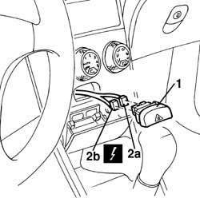

5550C14 hazard warning light switch - r+r
- Path
- Procedures > 55 ELECTRICAL EQUIPMENT > 5550 MANOEUVRING AND WARNING SIGNALS > 5550C turn signal/hazard warning lights > 5550C14 hazard warning light switch - r+r
- Kind
- repair procedure (removal / refitting; the operation number is the code)
- Applies to
- all engines; all production periods
- Interactive page
- https://sloeber94.github.io/elrnDB-a156/en/#/3238482
Applies to: all engines; all production periods
 Removing
Removing
 Refitting
Refitting1. Open the ash-tray and take the warning light switch off.
2. Disconnect the electrical connections (2a, 2b) and recover the switch.
 | Name | Connector |
|---|---|---|
2a | Hazard warning lights switch |
| Name | Connector |
|---|---|---|
2b | Hazard warning lights switch |

Applies to: all engines; all production periods
Refitting
RemovingCheck that the switch is not damaged and, if necessary, test its electrical functionality.
Connect the electrical connections.
Trig in its seat the warning light switsh.
Test the functionality of the warning lights.
Topics linked from this page (3)
- 5550C18 bulb of one front turn signal, l/h or r/h - r+r
- H20A Hazard warning lights switch ( FACIA )
- H20B Hazard warning lights switch ( FACIA )